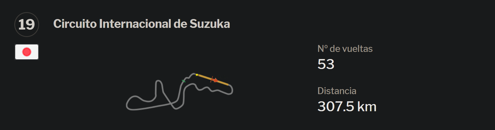

Gran Premio de BahréinSakhir, Del 18 al 20 de marzo, Sakhir, Bahréin 5'412 km de longitud, 15 curvas. |
Gran Premio de AustraliaAlbert Park, Del 08 al 10 de abril, Melbourne, Australia, 5'303 km de longitud, 16 curvas. |
Gran Premio de EspañaBarcelona-Catalunya, Del 20 al 22 de mayo, Montmeló (Barcelona), España, 4'655 km de longitud, 16 curvas. |
Gran Premio de MónacoMónaco, Del 27 al 29 de mayo, Montecarlo, Mónaco, 3'340 km de longitud, 19 curvas. |

Gran Premio de AzerbaiyánBakú, Del 10 al 12 de junio, Bakú, Azerbaiyán, 6'003 km de longitud, 20 curvas. |
Gran Premio de CanadáGilles Villeneuve, Del 17 al 19 de junio, Montreal, Canadá, 4'361 km de longitud, 12 curvas. |
Gran Premio de Gran BretañaSilverstone, Del 01 al 03 de julio, Silverstone, Gran Bretaña, 5'891 km de longitud, 18 curvas. |
Gran Premio de AustriaRed Bull Ring, Del 08 al 10 de julio, Knittelfeld, Austria, 4'326 de longitud, 10 curvas. |

Gran Premio de FranciaPaul Ricard, Del 22 al 24 de julio, Le Castellet, Francia, 5'842 km de longitud, 18 curvas. |
Gran Premio de HungríaHungaroring, Del 29 al 31 de julio, Mogyoród, Hungría, 4'381 km de longitud, 14 curvas. |
Gran Premio de BélgicaSpa-Francorchamps, Del 26 al 28 de agosto, Spa-Francorchamps, Bélgica, 7'004 km de longitud, 19 curvas. |
Gran Premio de ItaliaMonza, Del 09 al 11 de septiembre, Monza, Italia, 5'793 km de longitud, 11 curvas. |

Gran Premio de SingapurMarina Bay, Del 30 de septiembre al 02 de octubre, Singapur, Singapur, 5'073 km de longitud, 23 curvas. |

chevron_right
Gran Premio de JapónSuzuka, Del 07 al 09 de octubre, Suzuka, Japón, 5'807 km de longitud, 18 curvas. |
Gran Premio de los Estados UnidosCircuito de las Américas, Del 21 al 23 de octubre, Travis County (Austin - Texas), Estados Unidos, 5'513 km de longitud, 20 curvas. |
Gran Premio de MéxicoAutódromo Hermanos Rodríguez, Del 28 al 30 de octubre, México D.F., México, 4'421 de longitud, 16 curvas. |
Gran Premio de Abu DhabiYas Marina, del 18 al 20 de noviembre, Abu Dhabi, Emiratos Árabes Unidos, 5'554 km de longitud, 21 curvas. |
Gran Premio de BrasilJosé Carlos Pace (Interlagos), Del 11 al 13 de noviembre, São Paulo, Brasil, 4'309 km de longitud, 15 curvas. |